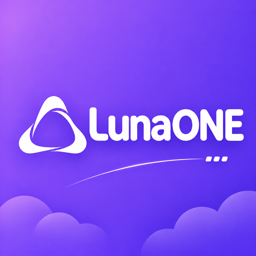
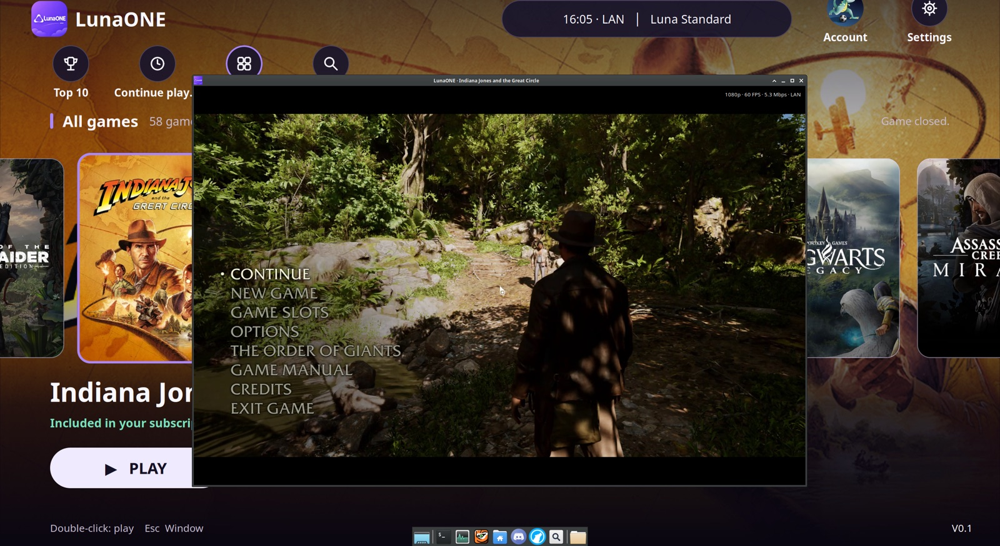
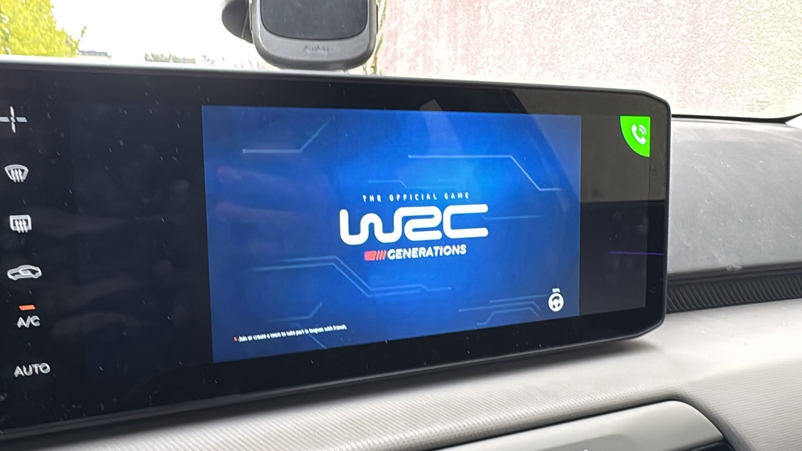

LunaONE, the open-source Amazon Luna client
Play your Amazon Luna cloud games in a native app instead of a web browser, on Windows, macOS, Linux, FreeBSD, Android, Google TV, iPhone and iPad. Use Xbox, PlayStation, Nintendo or 8BitDo controllers over USB or Bluetooth.
Free and open source (GPL-3.0). LunaONE is an independent community project, not affiliated with, endorsed by or sponsored by Amazon or Amazon Luna. You need your own Amazon account with access to Luna.
Screenshots


Features
No password typed
Sign in with a QR code and Amazon's official code page.
The whole Luna catalog
Top 10, Recently Played, All Games and search, with large cover art.
Up to 1080p at 60 FPS
Quality profiles from Low to Ultra, or Automatic for your screen and network.
Made for controllers
Xbox, PlayStation (DualSense, DualShock 4), Nintendo (Pro Controller, Joy-Con) and 8BitDo, over USB or Bluetooth, with the button names of the pad in your hands.
True full screen
F11, Alt + Enter, or the maximize button, like the Mac's green button. Esc returns to the window.
Private by design
No LunaONE server and no telemetry. Your sign-in and settings stay on your device.
Supported platforms
| Platform | Download |
|---|---|
| Windows 10/11 (x64 and ARM64) | ZIP: extract and run LunaONE.exe |
| macOS 13+ (Apple Silicon and Intel) | Universal app |
| Linux | Alpine ARM64 archive, or build from source |
| FreeBSD 14.4, 14.5, 15.0 and 15.1 (amd64 and ARM64) | Archive, with gtk3, sdl2, ffmpeg and curl from pkg |
| Android 8+, Google TV and Android Auto | APK |
| iPhone and iPad (iOS / iPadOS 17+) | IPA to sideload with AltStore or Sideloadly |
Questions
Can I play Amazon Luna on Linux or FreeBSD?
Yes. LunaONE is a native GTK app for Linux and FreeBSD, with FFmpeg video and SDL2 sound and controllers. Archives are provided for Alpine Linux ARM64 and for FreeBSD 14.4 to 15.1 on amd64 and ARM64, and other systems can build it from source.
Can I use a PS5 DualSense, a PS4 DualShock 4, a Switch Pro Controller or an 8BitDo controller with Amazon Luna on Windows?
Yes, over USB or Bluetooth and without extra software. 8BitDo pads work in X-input, Switch and D-input modes, and LunaONE shows the button names printed on your controller.
Does Amazon Luna work on Android TV, Google TV or in the car?
LunaONE's APK runs on Android 8+ phones and tablets, Google TV with the remote, and the Android screen of a car.
How do I play Amazon Luna on iPhone or iPad without Safari?
Install the LunaONE IPA with AltStore or Sideloadly and your own Apple ID. An Apple Watch can mirror the game when you build from source.
Can I use a keyboard and mouse?
Yes, to browse the library, open the settings and search for a game, also with the on-screen keyboard. In a game, LunaONE currently sends only the controller to Luna. Keyboard and mouse support in game is in progress.
Is LunaONE official? Do I need a subscription?
No, LunaONE is an independent open-source project and is not affiliated with Amazon. You sign in with your own Amazon account and play the games your Luna plan includes.